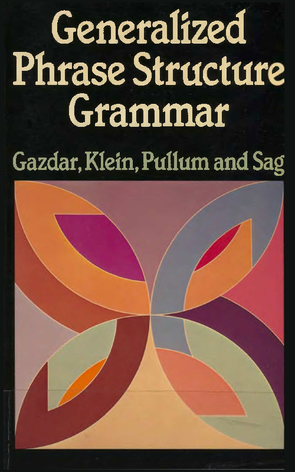

Nicholas LaCara – 18 September 2020 – Boston, ma
Largely out of curiosity and because I've owned the book for years, I started reading Generalized Phrase Structure Grammar (Gazdar, Klein, Pullum and Sag 1985; henceforth gkps 1985) toward the beginning of the coronavirus lock down, but I only made it a couple of chapters in before I put it down and moved onto other things. A brief conversation on Twitter reminded me of the book, though, and that I've always been curious about syntactic theories of this type, so I decided to pick it up again. This and future blog posts will present my thoughts on the book, thirty-five years removed from its publication, and from the perspective of somebody who practices a very different kind of syntactic theory.
So I guess I owe it to at least myself to explain why I'm reading a textbook about a syntactic framwork that came out before I was born and that few people currently use.
Since around the time I started my masters degree (so, 2008), I've been curious about syntactic frameworks outside the mainstream tradition of Transformational Grammar, which I take to include Minimalism, Principles & Parameters, Government & Binding, the ((Revised) Extended) Standard Theory, all the way back to Syntactic Structures (Chomsky 1957). This curiosity was re-enforced when Jim McCloskey made me read Levin's (1982) paper on Sluicing, which is couched entirely in Lexical–Functional Grammar.
If you are not very familiar with the terms in this section, these blog posts might not be for you. This will be more of a personal exercise, so I won't take much time to explain the details for folks without a background in theoretical linguistics.Graduate school being what it is, I never found the time to pursue my curiosity beyond what was necessary to grok an analysis from a paper in another framework that I needed to read. What really piqued my interest recently, though, was reading Natural Language Processing with Python. The Natural Language Toolkit implements some aspects of gpsg and hpsg grammars, and working with these frameworks in that context made me want to learn more about them.
Now I happened to have Generalized Phrase Structure Grammar lying around, and since I have much more free time now than when I was in graduate school, I decided to finally indulge the curiosity and spend some time reading about gpsg.
I'll admit that, despite having taught very technical courses on Minimalist theory, there are still some lacunae in my understanding of the formalism underlying it.This and future posts are going to discuss my perspective on, criticisms of, and thoughts about the framework as somebody who grew up in the tradition of Transformational Grammar and the bulk of whose theoretical work falls under the rubric of the Minimalist Program. I'll be taking the book chapter by chapter. If I don't find this journey too arduous, I hope to move on to take a look at gpsg's successor, Head-Driven Phrase Structure Grammar.
There are two main themes that are made explicit in the preface and introduction:
To my mind, these are both admirable goals. I think it can be said that Minimalism (as outlined in Chomsky 1995, anyway), attempts a more formal definition of its theory than its antecedents, though I have a feeling it wouldn't pass the muster of the authors of the present volume. This is to say nothing of later attempts to formalize Minimalist theory, such as Collins and Stabler 2016.Syntacticians should want a formally rigorous framework in which to base their work, and the authors spend some time here to discuss why this is so. Furthermore, their concern with semantics and how it should be integrated with syntax anticipates, somewhat, the move toward work at the syntax–semantics interface that became prevalent in the Minimalist tradition starting in the late 90s, and so it is interesting to see a discussion of these issues so early in another school of syntactic thought.
Indeed, these concerns are laid out under a general rubric of trying to be more precise and specific. As they put it at the beginning of the preface, gpsg ‘lays considerable stress on detailed specifications both of the theory and of the descriptions of parts of English grammar that we use to illustrate the theory’ (gkps 1985: ix). As they go on to say, ‘one cannot “assume some version of the X-bar theory” or conjecture that a “suitable” set of interpretive rules will do something as desired, any more than one can evade the entire enterprise of generative grammar by announcing: “We assume some recursive function that assigns to each grammatical and meaningful sentence of English an appropriate structure and interpretation.” One must set about constructing such a function’ (gkps 1985: ix).
To which I say: Great! But did we need a wholly new theory to accomplish these goals in 1985? Certainly precision in description and theoretical technology is valuable to any theory. Was Government and Binding, the mainstream framework of the time, incapable of approximating the level of precision that gkps desired (to say nothing of Lexical–Functional Grammar, Arc–Pair grammar, and others)? Does gpsg somehow prevent those working in it from being imprecise with their definitions?
We don't really get an answer to these questions in the preface or the introduction,We do get a lot of the authors throwing shade. but I'm hoping that in later chapters we will get a more explicit discussion of how the authors believe, beyond providing more formal definitions, gpsg surpasses its competitors.
Of course, the introduction of a new theory or framework can be premised on other theoretical commitments, and there is more to gpsg than an abstract goal of increased precision. For example, the elimination of anything resembling a derivation or separate levels of representation (which they mention on pages 10–11) is a big departure from Transformational Grammar. That said, given that they focus on concerns about semantics and formalism in the introduction and not on the technical aspects of the syntactic theory they propose, it strikes me as reasonable to interpret these as their chief causes in introducing the framework. The extent to which adopting a monostratal approach to syntax or their specific conception of features will interface with the broader goals remains to be seen.
In the rest of this post I spend some time discussing some of the major points from the preface and the introduction. I start with their discussion of formalism, Generative Grammar, and theoretical stipulations before turning to their discussion of Semantics. Overall, I think they make a lot of important critical points in this discussion, but at the end I'll discuss a couple of places where they seem to intentionally (and, I would suggest, unnecessarily) slight Government and Binding Theory.
The authors spend some time discussing how gpsg fits more broadly under the aegis of Generative Grammar and the perceived lack of precision that contemporary frameworks allowed. I suspect this is a reaction to the Principles and Parameters model, in which some principles must simply be listed; e.g., the Binding Theory is simply stated independent of any rules for determining the where arguments are placed in trees.They are especially concerned with the idea that purported linguistic universals are simply stated as stipulations in too many theories and that they should fall out from properties of the theory itself. As they point out, an easily modified stipulation is not as strong a conclusion as an immutable property of the theory, and so they conclude that the framework itself should be designed in such a way as to render linguistic universals unremarkable.
The authors situate their work firmly in the tradition of Generative Grammar (gkps 1985: 1–6). As they write, Generative Grammar seeks, as its goal, ‘a formalized general framework for defining the space within which to locate’ descriptions of particular languages and that in order to do this, ‘[a]n interpreted formal system defining the membership of the collection of linguistic expressions, and assigning a structure and an interpretation to each member, is required’ (gkps 1985: 1).
Their methodological assumptions lead them to conclude that this formal system should be responsible for determining language universals. ‘A grammatical framework can and should be construed’, they say, ‘as a formal language for specifying grammars’, and ‘[t]he most interesting contribution that generative grammar can make to the search for universals of language is to specify formal systems that have putative universals as consequences’ (gkps 1985: 2; emphasis mine). In other words, universal properties of natural languages should be predictions of the generative framework itself. As they put it, if something is universal, it should not need saying; that is, ‘a precise formulation of a successful discovery of this sort [of a linguistic universal —NL] will not constitute a truly interesting result in theoretical linguistics. If the fact needs a special statement, as opposed to following from the very form in which the theoretical reconstruction of the notion “natural language” has been cast, the job is not done […] these proposed universals are not accounted for by the mere fact of their having been written down in some uninterpreted algebraic formalism.’ (gkps 1985: 3).
I agree wholeheartedly with the spirit of these statements. I think it goes without saying that achieving a theory that makes explicit predictions that accurately match the empirical reality ought to be (and is) a central goal of Generative Grammar (as it is for any scientific field). To construct a framework in which linguistic universals are natural or logical consequences of that framework is an ideal that I would hope all linguists concerned with the architecture of the theory strive for. They are right to point out that universals ‘are not accounted for by the mere fact of their having been written down in some uninterpreted algebraic formalism’, since these formalisms ‘can be modified, enhanced, weakened, or even discarded for the rest of the theory’ (gkps 1985: 3).
This strikes me as at least a reasonable consideration to make, especially while introducing a new theoretical framework that you want to be guided by these principles. I do wish the authors had discussed more the ways they felt contemporary mainstream approaches lacked sufficient theoretical specification or cases where they believed it was too easy for theoreticians to manipulate their proposals. The sentiment, though well taken, comes across as a bit vague here, and it isn't totally clear exactly what sorts of things they are cautioning against. I find myself trying to fill in the blanks.
A broader concern I have is whether the issues they raise about the need for more and better formalism justify the introduction of a new framework. Again, though, see Collins and Stabler 2016, which attempts a formalized version of Minimalist grammar. It is at least possible to do this sort of thing for a pre-existing theory.I suppose it could be easier to develop a formal framework in tandem with a new syntactic theory rather than trying to fit a formalism to an existing theory. However, I get the sense that they might be eager to throw out the baby they know to exist in the bathwater of less rigorously defined formalisms. They manage to be very critical of Government & Binding Theory in this chapter without alleging any specific crimes (more on that below).
It is worth noting, though, that the authors are setting a bar for their own theory here, whether they mean to or not. It's easy to call out stipulations in other people's work (though the authors, again, cite no specific examples). I wonder, though, how well the authors will avoid similar stipulations in the chapters to come. No doubt
The other promise – that of better integration with semantic theory – receives a great deal of attention here. The authors tell us that unlike in other syntactic frameworks of the time, semantics will play a central role. We are even told that semantics will play a crucial role in the treatment of agreement! Their reasoning here is that there is no point to natural language if it does not generate meaningful expressions. This reminds me of a story I once heard about Chomsky claiming somebody could learn a language's syntax by listening to the radio but would have no idea what it meant.This stands in at least superficial contrast to Chomsky's conjecture that syntax is autonomous and separate from semantics and the general view in the Minimalist/GB/P&P tradition that semantics is determined from the output of the syntactic derivation. The idea here is that
Though they take some space to talk about semantics, I don't find much of what they say to be particularly controversial. The semantic framework they adopt here will essentially be a standard model-theoretic Montagovian one. I expect there will be some conflict in how they choose to map syntactic structures to semantic denotations.
The part that does look potentially suspect to me is in their conception of how syntactic rules relate to semantic ones. Referencing work arguing that each syntactic rule in a natural language's grammar is associated with a semantic rule, they say they will ‘assume that there exists a universal mapping from syntactic rules to semantic translations’ (gkps 1985: 8). I'm not quite sure yet what this will mean, since it's not exactly clear to me from the discussion here what they mean by syntactic or semantic rules and what they take those rules to be, but it is an intriguing idea nonetheless.That said, this sounds similar to a proposal that Dan Milway makes toward the end of his dissertation (2019:96ff). Disclosure: I was a member of Dan's committee. My hunch, though, is that this will not be too different from what linguists assume now, as they say that ‘semantic type assigned to any lexical item introduced in a rule [...] and the syntactic form of the rule itself are sufficient to fully determine (i) the form of the semantic translation rule, and thus (ii) the set of logical expressions which can represent the constituent defined by the syntactic rule, and thus (iii) the model-theoretic interpretations of that constituent’ (gkps 1985: 8–9).
Unfortunately, we will have to wait until the final chapter of the book (Chapter 10) to find out just what they have in mind, since most of the discussion of semantics is relegated to the final two chapters. Given that they seem so interested in the relation between syntax and semantics, I think it's a bit odd that they delay that discussion until the final chapters of the book, but the impression I have is that it is to make the book more accessible to syntacticians of the mid-eighties who might not have backgrounds in formal semantics. Including an explicit discussion of semantics at all is, to my knowledge, unusual for the time.
An important point they come to toward the end of this discussion is the rejection of semantics as a sort of filter on the syntax. The point here, as hinted above, is that there is (i) that no set of interpretive rules that map syntactic structures logical forms and (ii) that assigning meaning to a structure (or failure to do so) does not determine the grammaticality or well-formedness of that structure (i.e., there is no LF that can be used as a filter). Underlying this is the idea is the syntactic structure is its own logical form;Presumably, this means that the syntactic rules will never create a structure that is non-compositional. Failure to assign meaning will not arise form a failure of composition. structures to which no meaning can be assigned are well-formed but simply have no coherent meaning. This is, essentially, the point Chomsky (1957) makes with Colorless green ideas sleep furiously: The well-formedness of a syntactic object should not be contingent on its ability to receive a sensible interpretation.
This is all in keeping with the authors' commitment to a monostratal approach to grammar, where there are no separate levels of representation or a derivation that links these levels together. Building the logical form directly into the syntactic structure means that there need not be a separate level of representation for the logical form of a structure. To a Minimalist such as myself, who takes seriously the fact that there appear to be sentences whose phonological forms do not match their logical forms, I am curious how they intend to deal with problems such as scope ambiguities.
Unfortunately, all we get is an end note stating they ‘have worked under the assumption that quantifier ambiguities should be handled by some variant of “Cooper storage”’ (gkps 1985:15 n. 5). It is striking to read this after their admonishments in the preface against conjecturing that some suitable solution will work as desired. Already, I am worried that they are holding their framework to a different set of standards than their competitors.
I don't have many gripes about the preface and introduction; in fact, overall, I think I quite enjoyed them. Calls for theoretical rigor are hard to argue with, and I'm sure anybody working in syntactic theory has come across issues with theoretical precision in syntactic work that they are familiar with.
But these calls for theoretical rigor, while admirable and ostensibly neutral, belie, I think, a disdain for other frameworks (notably Government and Binding) that is hard to ignore.
I actually clipped one of the quotes I used at the beginning of my discussion. When they write that gpsg ‘lays considerable stress on detailed specifications both of the grammar and of the descriptions of English that we use to illustrate the theory’, they introduce this with the presupposition that this is ‘[u]nlike much theoretical linguistics’ (gkps 1985: ix).OK, technically this content introduces a conventional implicature, not a presupposition, but that's beside the point. This is a pretty hefty allegation to place in the second sentence of the volume, and one would think they would try to ground that allegation by adducing some evidence for it, but no evidence comes in the course of the preface or introduction.
Indeed, as I mentioned a few times above, I think it's clear that the authors see mainstream approaches to syntax as not just insufficient but inferior to their forthcoming proposals. At one point, their level of rhetorical disdain for Government and Binding Theory actually shocked me. In situating their theory as a member of Generative Grammar, they simply exclude GB:
It will be clear that our use of the term ‘generative grammar’ covers GPSG, LFG, APG, Montague Grammar in all its varieties, the work presented in Syntactic Structures (Chomsky 1957), Stockwell et al. 1973, Lasnik and Kupin 1977, and other work, but includes little of the research done under the rubric of the ‘Government Binding’ framework, since there are few signs of any commitment to the explicit specification of grammars or theoretical principles in this genre of linguistics. (gkps 1985:6)
I find this sort of thing disappointing and off-putting. I would have been happy to read substantive critiques of GB and the ways in which the authors find it to be insufficient or to have seen a real argument about why GB should be excluded from the grammatical tradition in which, to me, it so obviously sits. What we get instead is the dismissive declaration that GB is not Generative Grammar with only the passing assertion that it simply doesn't show a ‘any commitment to the explicit specification of grammars or theoretical principles’. I hope that the authors avoid these sorts of slights in the forthcoming chapters; it comes across less as critical and more as unnecessarily adversarial.
Overall, I am sympathetic to gkps's critiques and concerns as laid out in the introduction and preface, but I am skeptical that a wholly new framework was necessary to address them. I'm very interested to see the new technical machinery they introduce and whether it will actually be able to clear the bar they have set for themselves in their critique of other proposals, and I hope to see some more substantive discussion of their primary competitors.